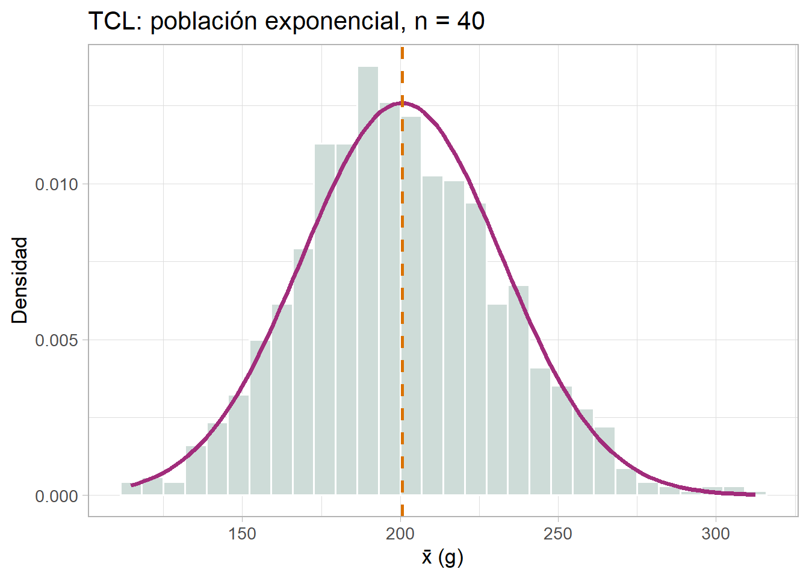

| Concepto | Símbolo | Ejemplo agrícola |
|---|---|---|
| Población | N unidades | Todos los árboles de cacao de una finca (N = 2 500) |
| Muestra | n unidades | 80 árboles seleccionados aleatoriamente |
| Parámetro (media) | μ | Rendimiento promedio real de todos los árboles |
| Estadístico (media) | x̄ | Promedio calculado de los 80 árboles muestreados |
| Marco muestral | — | Plano de la finca con numeración de árboles |
| Error de muestreo | x̄ − μ | Diferencia entre el promedio muestral y el real |
5 Muestreo
5.1 Objetivos del capítulo
Al finalizar este capítulo, el lector será capaz de:
- Distinguir entre población, muestra, parámetro y estadístico
- Justificar la necesidad del muestreo en investigación agrícola
- Identificar y aplicar los cuatro tipos de muestreo probabilístico en R
- Comprender la distribución muestral de \(\bar{x}\) y el Teorema Central del Límite
- Calcular el tamaño de muestra necesario para estimar una media poblacional
5.2 ¿Por qué muestrear?
En investigación agrícola es frecuente querer conocer características de una población completa: el rendimiento promedio de todos los árboles de una plantación de cacao, el peso de todos los frutos de una parcela de aguacate, o la concentración de nitrógeno en todos los lotes de una finca. Sin embargo, estudiar toda la población rara vez es posible por razones prácticas:
- Costo: medir el rendimiento de 10 000 árboles de una finca requiere recursos humanos y materiales prohibitivos.
- Tiempo: completar el censo de una plantación puede tomar más tiempo del disponible para tomar decisiones de manejo.
- Destrucción de unidades: en algunos casos la medición destruye la unidad (análisis de laboratorio de suelos, madurez de frutos mediante corte).
- Poblaciones inaccesibles: no es posible acceder físicamente a cada unidad de la población.
La solución es obtener una muestra que sea representativa de la población y usar sus resultados para hacer inferencias sobre ella. Esta idea conecta directamente con las etapas del proceso estadístico vistas en el Capítulo 2: la planificación y recolección de datos siempre involucran una decisión de muestreo (Agresti et al., 2023).
5.3 Conceptos clave
Definición 5.1 La población es el conjunto completo de unidades sobre las cuales se desea obtener información.
Definición 5.2 La muestra es un subconjunto de la población seleccionado para ser medido u observado.
Definición 5.3 Un parámetro es una medida numérica que describe una característica de la población (e.g., \(\mu\), \(\sigma\), \(p\)). Los parámetros generalmente son desconocidos.
Definición 5.4 Un estadístico es una medida numérica calculada a partir de los datos de la muestra (e.g., \(\bar{x}\), \(s\), \(\hat{p}\)). Los estadísticos se usan para estimar los parámetros.
Definición 5.5 El marco muestral es la lista o representación de todas las unidades de la población de las cuales puede seleccionarse la muestra (e.g., un plano de la finca con numeración de parcelas, un registro de productores).
Definición 5.6 El error de muestreo es la diferencia entre el estadístico calculado de la muestra y el parámetro verdadero de la población: \(\bar{x} - \mu\).
5.4 Tipos de muestreo probabilístico
En el muestreo probabilístico cada unidad de la población tiene una probabilidad conocida y mayor que cero de ser seleccionada. Esto garantiza que la muestra sea representativa y permite cuantificar el error de muestreo.
5.4.1 Muestreo Aleatorio Simple (MAS)
En el MAS todas las unidades de la población tienen la misma probabilidad de ser seleccionadas. Es el método más básico y es la base teórica de los demás tipos de muestreo.
En R se implementa con la función sample():
set.seed(42)
# Población: 500 árboles numerados del 1 al 500
N <- 500
n <- 30
# Selección aleatoria simple sin reemplazo
muestra_mas <- sample(1:N, size = n, replace = FALSE)
sort(muestra_mas) [1] 5 20 24 49 74 89 109 110 122 128 146 153 165 212 228 283 297 303 321
[20] 327 356 367 370 387 410 418 420 485 486 5005.4.2 Muestreo Sistemático
En el muestreo sistemático se selecciona una unidad de arranque al azar entre las primeras \(k\) unidades, y luego se toma cada \(k\)-ésima unidad. El intervalo de muestreo es:
\[k = \left\lfloor \dfrac{N}{n} \right\rfloor\]
Es especialmente útil en transectos de campo, revisión de plantas en hileras de cultivo o muestreo de suelos a lo largo de un perfil.
set.seed(7)
N <- 500; n <- 25
k <- floor(N / n) # intervalo de muestreo
inicio <- sample(1:k, 1) # arranque aleatorio
muestra_sist <- seq(inicio, N, by = k)
cat("Intervalo k =", k, "| Arranque =", inicio, "\n")Intervalo k = 20 | Arranque = 10 head(muestra_sist, 10) [1] 10 30 50 70 90 110 130 150 170 1905.4.3 Muestreo Estratificado
La población se divide en estratos (grupos homogéneos entre sí pero heterogéneos entre grupos) y se extrae una muestra aleatoria de cada estrato. Garantiza representación de todos los grupos.
Ejemplo: en una finca con parcelas en tres zonas de altitud (baja, media, alta), cada zona es un estrato.
library(dplyr)
set.seed(10)
# Marco muestral: 300 parcelas distribuidas en 3 estratos
marco <- tibble(
parcela = 1:300,
estrato = rep(c("Baja", "Media", "Alta"), times = c(150, 100, 50)),
rend_pob = c(rnorm(150, 45, 5), rnorm(100, 55, 6), rnorm(50, 65, 7))
)
# Muestreo estratificado proporcional: n = 30
muestra_estrat <- marco |>
group_by(estrato) |>
slice_sample(prop = 0.10) |> # 10% de cada estrato
ungroup()
muestra_estrat |>
group_by(estrato) |>
summarise(n = n(), media = mean(rend_pob)) |>
knitr::kable(digits = 2, caption = "Resultados por estrato")| estrato | n | media |
|---|---|---|
| Alta | 5 | 70.19 |
| Baja | 15 | 45.24 |
| Media | 10 | 51.98 |
5.4.4 Muestreo por Conglomerados
La población se divide en conglomerados (grupos naturales como fincas, lotes, bloques) y se seleccionan aleatoriamente algunos conglomerados completos. Es útil cuando no existe un marco muestral individual pero sí una lista de grupos.
set.seed(5)
# 20 fincas (conglomerados), cada una con ~15 parcelas
n_fincas_total <- 20
fincas_muestra <- sample(1:n_fincas_total, size = 5, replace = FALSE)
parcelas <- tibble(
finca = rep(1:n_fincas_total, each = 15),
parcela = 1:(n_fincas_total * 15),
rend = rnorm(n_fincas_total * 15, 48, 10)
)
muestra_congl <- parcelas |>
filter(finca %in% fincas_muestra)
cat("Fincas seleccionadas:", fincas_muestra, "\n")Fincas seleccionadas: 2 11 15 19 9 cat("Total parcelas en muestra:", nrow(muestra_congl))Total parcelas en muestra: 755.5 Distribución muestral y Teorema Central del Límite
5.5.1 Distribución muestral de \(\bar{x}\)
Cuando se extrae una muestra de tamaño \(n\) de una población y se calcula \(\bar{x}\), ese valor cambia de muestra en muestra. Si repitiéramos el proceso de muestreo muchas veces, obtendríamos una distribución de todos los posibles valores de \(\bar{x}\). A esta distribución se le llama distribución muestral de \(\bar{x}\).
Definición 5.7 La distribución muestral de \(\bar{x}\) es la distribución de probabilidad del estadístico \(\bar{x}\) obtenido de todas las posibles muestras de tamaño \(n\) extraídas de una población.
Sus propiedades son:
- Media de la distribución muestral: \(\mu_{\bar{x}} = \mu\)
- Error estándar: \(\sigma_{\bar{x}} = \dfrac{\sigma}{\sqrt{n}}\)
5.5.2 Teorema Central del Límite (TCL)
ImportanteTeorema Central del Límite
Si se extraen muestras aleatorias de tamaño \(n\) de una población con media \(\mu\) y desviación estándar \(\sigma\), entonces para \(n\) suficientemente grande (\(n \geq 30\) como regla general):
\[\bar{X} \sim \mathcal{N}\!\left(\mu,\; \dfrac{\sigma}{\sqrt{n}}\right)\]
independientemente de la forma de la distribución de la población original.
Este teorema es uno de los resultados más importantes de la estadística porque justifica el uso de la distribución Normal en la inferencia estadística aun cuando la población no es normal (Agresti et al., 2023).
Tip¿Qué observar?
- Con n pequeño (2-5), la distribución de \(\bar{x}\) aún refleja la forma de la población original.
- Con n = 30 o más, la distribución de \(\bar{x}\) es aproximadamente normal sin importar si la población es uniforme, exponencial o bimodal.
- El error estándar \(\sigma/\sqrt{n}\) disminuye al aumentar \(n\): muestras más grandes dan estimaciones más precisas.
5.5.3 Verificación en R
set.seed(2024)
# Población exponencial (muy sesgada): peso de frutos en g
# Media verdadera μ = 200 g
pop <- rexp(100000, rate = 1/200)
cat("Población exponencial:\n")Población exponencial:cat(" μ =", round(mean(pop), 2), "g\n") μ = 200.57 gcat(" σ =", round(sd(pop), 2), "g\n\n") σ = 200.33 g# Simular 1000 muestras de n = 40 y calcular x̄
set.seed(2024)
medias <- replicate(1000, mean(sample(pop, 40)))
cat("Distribución de x̄ (n = 40, M = 1000):\n")Distribución de x̄ (n = 40, M = 1000):cat(" Media de x̄ =", round(mean(medias), 2), "≈ μ\n") Media de x̄ = 201.62 ≈ μcat(" DE de x̄ =", round(sd(medias), 2), "≈ σ/√n =",
round(sd(pop)/sqrt(40), 2), "\n") DE de x̄ = 32.19 ≈ σ/√n = 31.68 
5.6 Tamaño de muestra
Una pregunta fundamental en la planificación de un estudio es: ¿cuántas unidades debo muestrear?
Para estimar la media poblacional \(\mu\) con un margen de error máximo \(E\) y un nivel de confianza \(1 - \alpha\), el tamaño de muestra necesario es:
\[n = \left(\dfrac{z_{\alpha/2} \cdot \sigma}{E}\right)^2 \tag{5.1}\]
donde:
- \(z_{\alpha/2}\) es el valor crítico de la distribución Normal estándar (e.g., \(z_{0.025} = 1.96\) para 95% de confianza)
- \(\sigma\) es la desviación estándar de la población (si se desconoce, se puede estimar con datos previos o un estudio piloto)
- \(E\) es el margen de error deseado (máxima diferencia tolerable entre \(\bar{x}\) y \(\mu\))
TipEjemplo: muestreo de rendimiento de cacao
Se desea estimar el rendimiento promedio de una plantación de cacao con un margen de error de \(\pm 50\) kg/ha y 95% de confianza. Estudios previos indican \(\sigma = 200\) kg/ha.
sigma <- 200 # desviación estándar (kg/ha)
E <- 50 # margen de error (kg/ha)
z <- qnorm(0.975) # z_{0.025} = 1.96
n_calc <- ceiling((z * sigma / E)^2)
cat("Tamaño de muestra necesario: n =", n_calc, "parcelas")Tamaño de muestra necesario: n = 62 parcelas5.6.1 Calculadora interactiva de tamaño de muestra
5.6.2 Tamaño de muestra con población finita
La fórmula anterior para el tamaño de muestra supone una población muy grande. Sin embargo, cuando la población total (N) es conocida y la muestra representa una fracción importante de ella, conviene aplicar la corrección por población finita.
Si (n_0) es el tamaño de muestra calculado sin corrección,
[ n_0 = ()^2 ]
entonces el tamaño ajustado para una población finita de tamaño (N) es:
[ n = ]
Este ajuste reduce el tamaño de muestra requerido cuando la población no es muy grande.
Ejercicios
- Una finca de café tiene 800 árboles. Se desea estimar el rendimiento promedio con una muestra de 60 árboles.
- Implemente un MAS en R con
sample(). - ¿Cuál es la probabilidad de selección de cada árbol?
- Repita la selección con tres semillas diferentes (
set.seed()) y compare las muestras.
- Implemente un MAS en R con
- Una parcela experimental de maíz tiene 240 plantas distribuidas en 12 surcos de 20 plantas cada uno. Se desea seleccionar 24 plantas con muestreo sistemático.
- Calcule el intervalo \(k\).
- Implemente la selección en R.
- ¿Qué ventaja tiene el muestreo sistemático sobre el MAS en este contexto?
- Una región tiene 500 fincas productoras de cacao distribuidas en tres pisos altitudinales: 200 en zona baja (0-500 m), 180 en zona media (500-1000 m) y 120 en zona alta (> 1000 m). Se quiere una muestra de 50 fincas.
- ¿Cuántas fincas corresponden a cada estrato en un muestreo estratificado proporcional?
- Implemente la selección en R con
group_by()yslice_sample(). - Compare el promedio muestral con el poblacional.
- Usando el Teorema Central del Límite:
- Genere una población de 50 000 valores con distribución uniforme entre 10 y 50 (
runif()). - Simule 2 000 muestras de tamaño \(n = 35\) y calcule \(\bar{x}\) para cada una (
replicate()). - Grafique la distribución de los \(\bar{x}\) con
ggplot2y superponga la curva Normal teórica. - Verifique que la media y el error estándar de las \(\bar{x}\) coincidan con los predichos por el TCL.
- Genere una población de 50 000 valores con distribución uniforme entre 10 y 50 (
- Para estimar el peso promedio de frutos de aguacate en una plantación, estudios previos indican \(\sigma = 85\) g.
- ¿Cuántos frutos deben medirse para un margen de error de \(\pm 20\) g con 95% de confianza?
- ¿Cuántos se necesitarían con 99% de confianza?
- ¿Cómo cambia \(n\) si se reduce \(\sigma\) a 60 g (por selección de variedad más homogénea)?